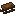
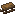
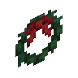

Snowy Spirit
共 59 个条目 · snowyspirit
版本: 1.21.1-3.1.13 · 来源: snowyspirit-1.21.1-3.1.13-neoforge.jar
Winter-themed mod that adds working sleds and winter-related items with related ai tweaks for villagers
MC百科页面: https://www.mcmod.cn/class/7511.html（SnowySpirit）
官方介绍 （Modrinth · 联网获取）
Snowy Spirit is a Winter themed mod that adds many decorative blocks & featuresl This mod is highly configurable and all its blocks and items can be tweaked or disabled. Its main features are:
Sleds
- Sleds are new way to get around Snow. Differently from Boats they curve around the terrain they encounter making them able to smoothly climb up and down slopes.
- When going downhill they will also accelerate further making ski courses possible.
- Sleds have improved mobility on Ice and while being able to slide on Snow are still able to steer and you can even bring them to a full stop by rotating the sled by 90 degrees, as you would in real life!
- Chests can be placed on them to give some inventory space. Also works with Shulker Boxes and Sacks from Supplementaries.
- You can also attach a tamed Wolf with a Lead to it. When Sleds are pulled by Wolves they will have increase mobility, speed and will be able to climb up with minimal deceleration.
- Igloos can now spawn with an additional Sled with Chest in front that can contain some sweet winter loot.
- Sleds can be further customized by placing Carpets on top of them. Doing so will additionally prevent freezing when sledding on top of frigid Powdered Snow.
Villagers AI
- During winter time villagers will occasionally place down Wreaths on their house doors. They can only place one each and don't worry, they will clean them up when winter is over. Wreath placing can happen during idle time so at around 0 for example.
- If you have Supplementaries installed villagers will also place down Present blocks containing some cool items. They will only be able to place one Present each and will do so during their meet time (after 9000) around their meeting point.
- Baby villagers from Taiga and Tundra will throw Snowballs at any entity they see during their play time.
- "Winter Time" is a period of time which can be configured with the provided configs and by default goes from the 20th of December to the 30th of January.
- If you have Serene Seasons installed you can also make the mod follow its seasons instead.
Winter themed blocks
- Ginger: a new crop that can be crafted into Gingerbread Blocks, a new decorative block. Wild Ginger can be found in Sparse Jungle biomes.
- Gumdrops: they come in all colors and can be pushed by entities acting as a mix between a Button and a Pressure Plate that works on all directions.
- Candy Cane: a sweet looking item, literally. Can be crafted in decorative Candy Cane Blocks.
- Wreaths: can be placed on doors to bring some Christmasy joy to your house. Works with all modded doors as well.
- Glow Lights: an item that can be placed on any Leaves to give it some glow in the dark action. Can be removed with Shears or broken.
- Snow Globe: a block that will change to its snowy state when placed in places where it can snow.
- New music disc: a new winter themed music disc has been added and can be rarely found in Presents and Igloo Sled Chests.
This project was made during WinterJam 2021
Modding is taking a lot of my time, so if you like what I do, and you would like to support me, you can do so here. If you do, you'll receive a custom Globe and or Statue just for you! This also applies if you purchase a server from Akliz using "supplementaries" code.
Need a server? Check out Akliz, they have top brand servers just for modded minecraft.
Use code "supplementaries" to get 20% off and also support me in the process!
资料来源：Snowy Spirit（自动匹配，仅供参考）
物品与方块
 拐杖糖
拐杖糖snowyspirit:candy_cane · 物品
 拐杖糖块
拐杖糖块snowyspirit:candy_cane_block · 方块
 蛋奶酒
蛋奶酒snowyspirit:eggnog · 物品
 姜
姜snowyspirit:ginger · 方块
 箱装姜
箱装姜snowyspirit:ginger_crate · 方块
 姜花
姜花snowyspirit:ginger_flower · 物品
 姜饼
姜饼snowyspirit:gingerbread · 方块
 姜饼曲奇
姜饼曲奇snowyspirit:gingerbread_cookie · 物品
 姜饼门
姜饼门snowyspirit:gingerbread_door · 方块
 糖霜姜饼
糖霜姜饼snowyspirit:gingerbread_frosted · 方块
 姜饼傀儡刷怪蛋
姜饼傀儡刷怪蛋snowyspirit:gingerbread_golem_spawn_egg · 物品
 姜饼台阶
姜饼台阶snowyspirit:gingerbread_slab · 方块
 姜饼楼梯
姜饼楼梯snowyspirit:gingerbread_stairs · 方块
 姜饼活板门
姜饼活板门snowyspirit:gingerbread_trapdoor · 方块
 黑色彩灯
黑色彩灯snowyspirit:glow_lights_black · 方块
 蓝色彩灯
蓝色彩灯snowyspirit:glow_lights_blue · 方块
 棕色彩灯
棕色彩灯snowyspirit:glow_lights_brown · 方块
 青色彩灯
青色彩灯snowyspirit:glow_lights_cyan · 方块
 灰色彩灯
灰色彩灯snowyspirit:glow_lights_gray · 方块
 绿色彩灯
绿色彩灯snowyspirit:glow_lights_green · 方块
 淡蓝色彩灯
淡蓝色彩灯snowyspirit:glow_lights_light_blue · 方块
 淡灰色彩灯
淡灰色彩灯snowyspirit:glow_lights_light_gray · 方块
 黄绿色彩灯
黄绿色彩灯snowyspirit:glow_lights_lime · 方块
 品红色彩灯
品红色彩灯snowyspirit:glow_lights_magenta · 方块
 橙色彩灯
橙色彩灯snowyspirit:glow_lights_orange · 方块
 粉红色彩灯
粉红色彩灯snowyspirit:glow_lights_pink · 方块
 五彩彩灯
五彩彩灯snowyspirit:glow_lights_prismatic · 方块
 紫色彩灯
紫色彩灯snowyspirit:glow_lights_purple · 方块
 红色彩灯
红色彩灯snowyspirit:glow_lights_red · 方块
 白色彩灯
白色彩灯snowyspirit:glow_lights_white · 方块
 黄色彩灯
黄色彩灯snowyspirit:glow_lights_yellow · 方块
 黑色橡皮糖
黑色橡皮糖snowyspirit:gumdrop_black · 方块
 蓝色橡皮糖
蓝色橡皮糖snowyspirit:gumdrop_blue · 方块
 棕色橡皮糖
棕色橡皮糖snowyspirit:gumdrop_brown · 方块
 青色橡皮糖
青色橡皮糖snowyspirit:gumdrop_cyan · 方块
 灰色橡皮糖
灰色橡皮糖snowyspirit:gumdrop_gray · 方块
 绿色橡皮糖
绿色橡皮糖snowyspirit:gumdrop_green · 方块
 淡蓝色橡皮糖
淡蓝色橡皮糖snowyspirit:gumdrop_light_blue · 方块
 淡灰色橡皮糖
淡灰色橡皮糖snowyspirit:gumdrop_light_gray · 方块
 黄绿色橡皮糖
黄绿色橡皮糖snowyspirit:gumdrop_lime · 方块
 品红色橡皮糖
品红色橡皮糖snowyspirit:gumdrop_magenta · 方块
 橙色橡皮糖
橙色橡皮糖snowyspirit:gumdrop_orange · 方块
 粉红色橡皮糖
粉红色橡皮糖snowyspirit:gumdrop_pink · 方块
 紫色橡皮糖
紫色橡皮糖snowyspirit:gumdrop_purple · 方块
 红色橡皮糖
红色橡皮糖snowyspirit:gumdrop_red · 方块
 白色橡皮糖
白色橡皮糖snowyspirit:gumdrop_white · 方块
 黄色橡皮糖
黄色橡皮糖snowyspirit:gumdrop_yellow · 方块
 音乐唱片
音乐唱片snowyspirit:music_disc_a_carol · 物品
 姜盆栽
姜盆栽snowyspirit:potted_ginger · 方块?%s雪橇
snowyspirit:sled · 物品金合欢木雪橇
snowyspirit:sled_acacia · 物品白桦木雪橇
snowyspirit:sled_birch · 物品

深色橡木雪橇snowyspirit:sled_dark_oak · 物品丛林木雪橇
snowyspirit:sled_jungle · 物品
 橡木雪橇
橡木雪橇snowyspirit:sled_oak · 物品

云杉木雪橇snowyspirit:sled_spruce · 物品
 雪景球
雪景球snowyspirit:snow_globe · 方块野生姜
snowyspirit:wild_ginger · 方块

花环snowyspirit:wreath · 方块